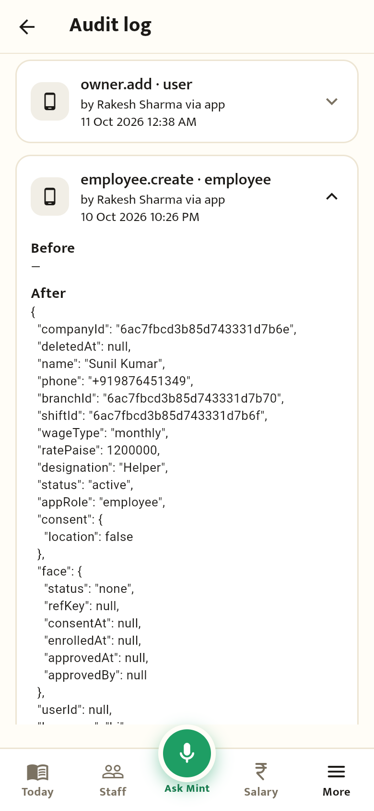
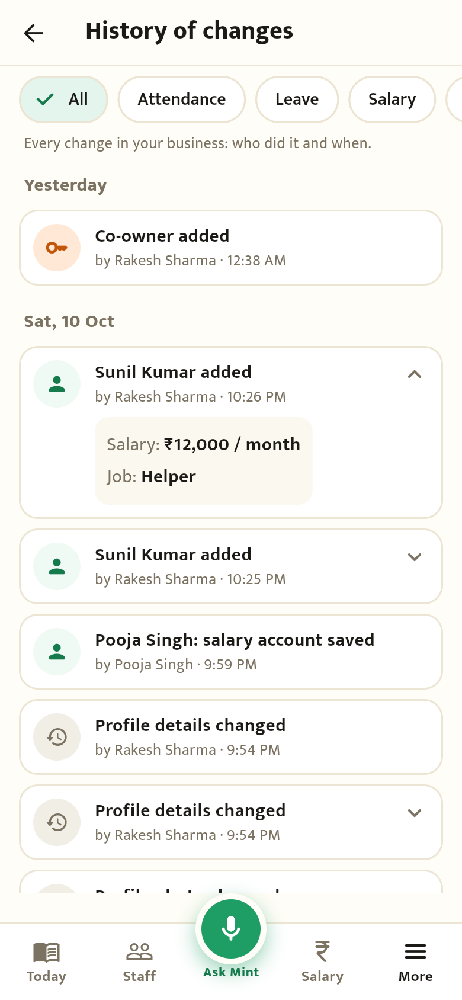
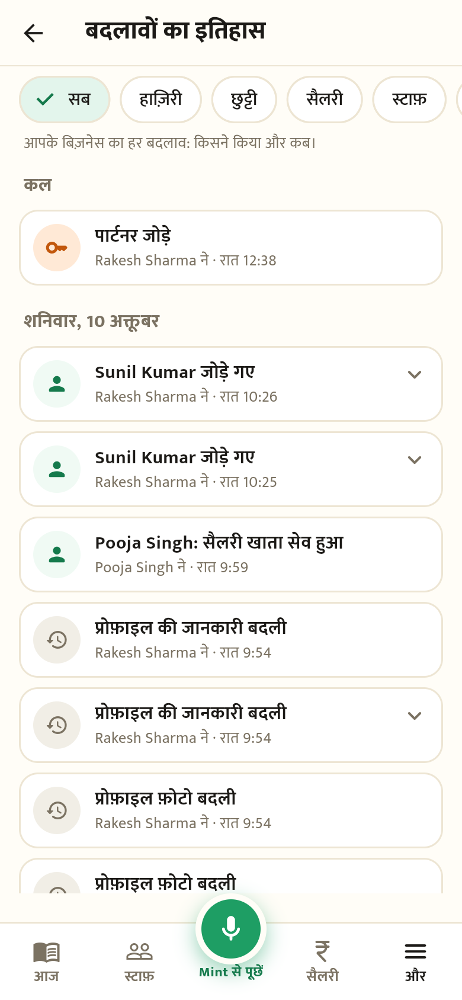

History of changes: before vs after
Real screenshots of the app (More → History of changes). The same entry, "Sunil Kumar added", in each.
Before

- Rows show codes like
employee.create · employee. - Tapping shows raw JSON: ids, nulls,
"ratePaise": 1200000. - No grouping by day, no filters.
After

- One sentence per change: "Sunil Kumar added", "Raju: 1 Oct set to Absent".
- "by Rakesh Sharma · 10:26 PM" under each; grouped by Today / Yesterday / date.
- Tap shows what changed: "Salary: ₹12,000 / month · Job: Helper".
- Filters: All, Attendance, Leave, Salary, Staff, Shop rules, Team.
After · हिन्दी

- Hindi mode is all Hindi: "Sunil Kumar जोड़े गए".
- "Rakesh Sharma ने · रात 10:26".
- Same filters and day groups.